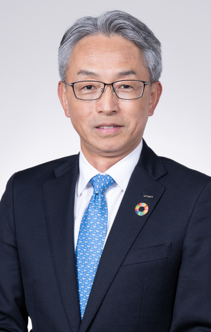

8.23（水）10：55～11：25
Realizing a Sustainable Future～NTTデータグループ グローバル20万人が挑む新たな社会・産業変革～
NTTデータ代表取締役社長
佐々木 裕 氏
NTTデータでは、持続可能な未来の実現に向けて、世界53か国・約20万人の社員が社会・産業変革に取り組んでいます。あるべき社会・産業の未来をお客様と共に描き、先進テクノロジーを活用し変革に挑むNTTデータの取り組みをご紹介します。